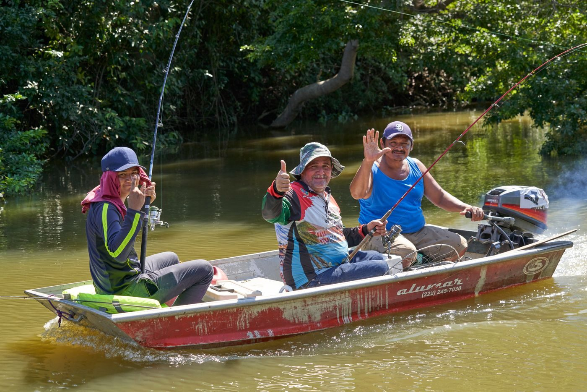
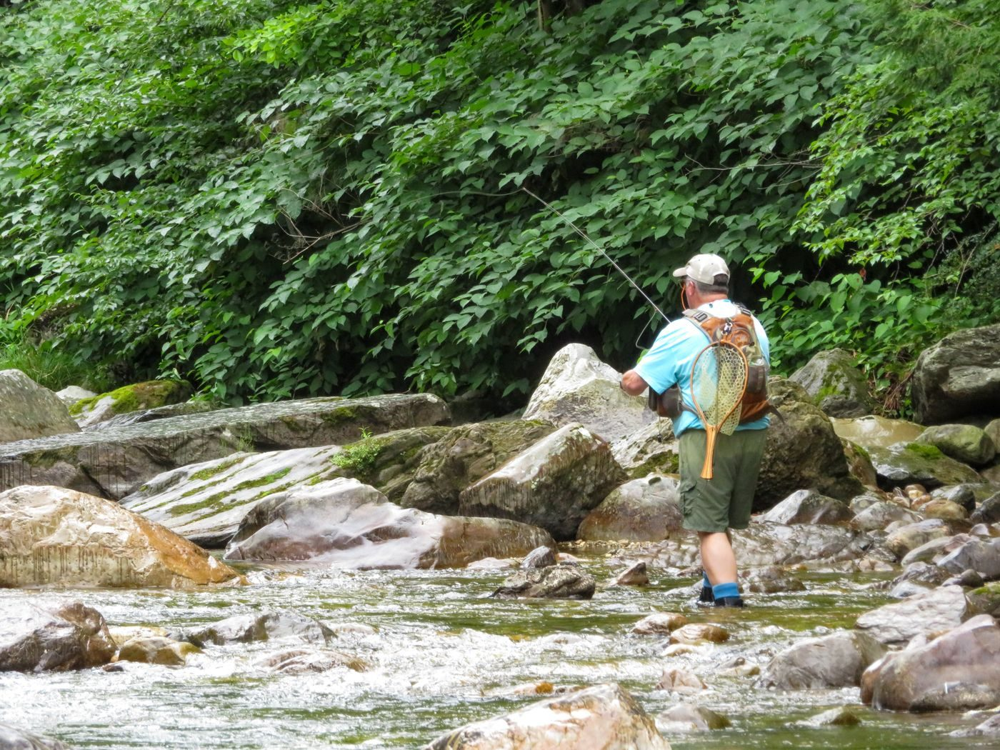

On the river



Grand Rapids, Michigan
A guided river fishing service in the Grand Rapids area, run by Capt. Anthony Rodriguez with 15 years of experience, fishing the Muskegon, Big Manistee, Pere Marquette, and Grand rivers from an 18 ft Woolridge jet boat for up to 3 guests.
Big River Outfitters is a guided river fishing service run by Capt. Anthony Rodriguez, with 15 years of experience. Trips run on the Muskegon, Big Manistee, Pere Marquette, and Grand rivers, from an 18 ft Woolridge jet boat for up to 3 guests. Live bait and catch cleaning and filleting are included, and trips are child friendly.

Riverside Park Drive NW, Grand Rapids, MI 49504
By booking; seasonal trips